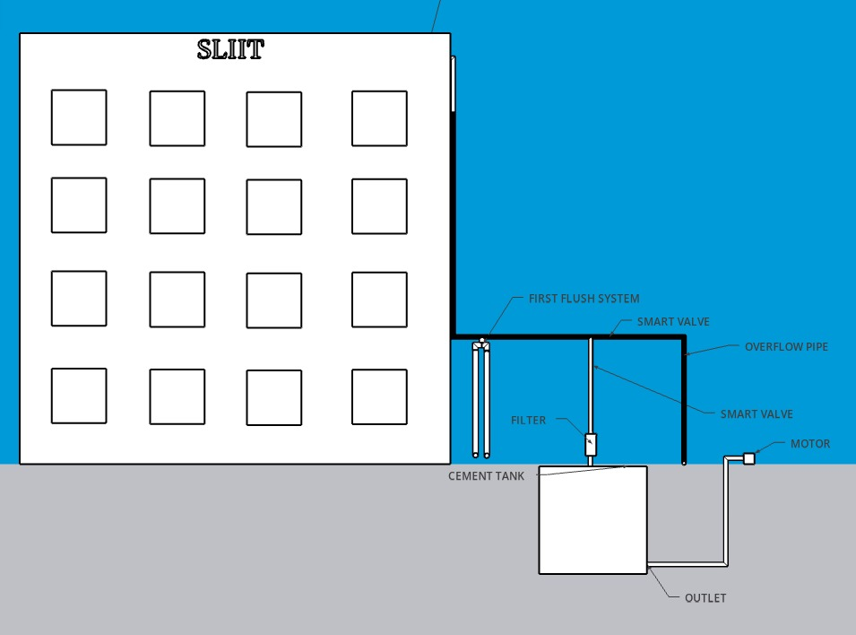

Sketchup · Material Selection · IOT
An IoT-integrated smart rainwater harvesting system designed to mitigate urban flooding and water scarcity by automating the collection, purification, and storage of rainwater for non-potable household use. The system utilizes a first-flush diverter, sand and gravel filtration, and an underground concrete storage tank, all seamlessly controlled and monitored in real-time via an ESP32 microcontroller and smart valves.
The development process was driven by comprehensive background research and a comparative analysis of multiple sustainable engineering solutions. Special engineering focus was placed on optimizing sustainable material selection, establishing accurate project cost estimations, and designing an automated collection and distribution workflow to ensure both economic feasibility and environmental sustainability in urban environments.